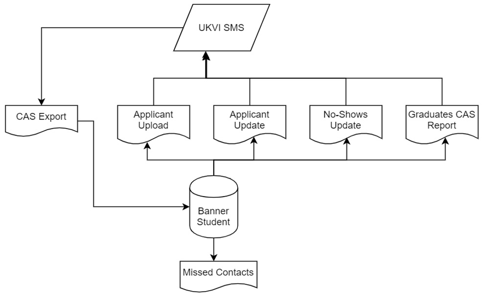

INTTRACKUK reporting system
Banner International Student Tracking for the UK (INTTRACKUK) is designed to create bulk reports for electronic generation of Confirmation of Acceptance for Studies (CAS) applications to be sent to the UK Visa and Immigration services (UKVI, formerly UKBA).
INTTRACKUK tracks the international students who have applied for a visa to enter the UK for studies under Tier4 or have applied for the extension of leave to continue their studies at a higher education institution in the UK.
In addition to this, INTTRACKUK provides functionality to collect attendance data for CAS students from Attendance Tracking (optional) for manual reporting in the SMS portal.
INTTRACKUK data collection makes use of Banner Student, Banner General, UCAS, and HESA information where possible, but delivers pages to store CAS specific data (like CAS Number and Status), in addition to the data that is currently not stored in one of the Banner Student, General, UCAS, and HESA products (like Program Fees Paid, Accommodation Fees Paid).
The product provides processes, tasks, and activities that you can run using the Banner Mass Data Update Utility (MDUU) to collect required student data and export the data into XML files for bulk upload into the SMS portal, in addition to importing of CAS data from the portal into the CAS pages.
You can see the files and data that have been exported from or imported into Banner and mark files as uploaded to the SMS portal.
- Applicant Data Upload: Generates a document containing CAS applicant data from the Banner system to be uploaded to the SMS portal for a CAS to be assigned.
- Applicant Data Update: Generates a document containing fee payment data for CAS applicants to be uploaded to the SMS portal.
- CAS Data Export: Loads a document containing CAS information from the UKVI SMS into Banner.
- No Shows Reporting: Generates a document containing data for students with a valid CAS number who were expected to enrol in the institution by a specified date, but have not.
- Missed Contact Reporting: Generates a report containing data from Attendance Tracking for enrolled students who have missed ten expected contacts.
- Graduates CAS Reporting: Generates a report containing the CAS Numbers for students who have successfully completed an eligible course of study at a UK higher education institution to be uploaded to the SMS portal for graduates to apply for extension of their leave to stay to work or look for work in the UK. The following is the typical process flow for Banner INTTRACKUK Reporting.
